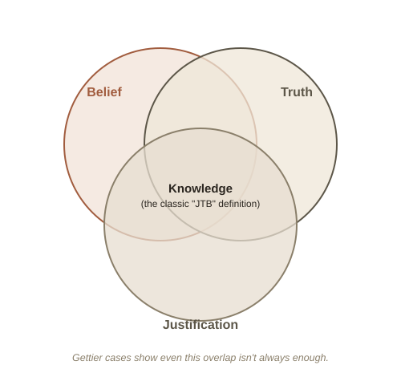

Chapter 1: What Does It Mean To "Know" Something?
Epistemology (from Greek "episteme," meaning knowledge) is the branch of philosophy that studies knowledge itself — not any particular fact, but the more basic question of what "knowing" something even means, and how you can tell the difference between actually knowing a thing and merely believing it correctly by luck.
The classic definition: Justified True Belief
For most of the last 2,000 years, philosophers largely agreed on a tidy three-part definition, traceable back to Plato. To know something, you need all three of the following at once:
- Belief — you actually have to believe it. You can't be said to "know" a fact you don't even believe.
- Truth — it has to actually be true. You can't "know" something false, no matter how confident you feel; at best you sincerely, wrongly believed it.
- Justification — you need a good reason for believing it. A lucky guess that happens to be true isn't knowledge.

That last part is what separates knowledge from a coincidence. If you guess a coin flip correctly, you had a true belief, but not knowledge — you had no actual justification, just luck. This is intuitive, tidy, and was treated as more or less settled — until 1963.
Gettier's three-page problem
In a paper barely three pages long, philosopher Edmund Gettier described situations where someone has a justified true belief that still doesn't feel like knowledge — because the justification and the truth are connected only by accident. Here's a classic version:
You glance at a clock on the wall that reads 3:00, and you form the belief "it's 3:00 now." Your belief is justified — you have every normal reason to trust a clock. It also happens to be true — it genuinely is 3:00. But unknown to you, the clock actually stopped working exactly 24 hours ago, at 3:00 yesterday. You got the right answer, from a source you were reasonably justified in trusting, but only by pure coincidence.
This is a justified true belief by the textbook definition, yet almost everyone's intuition says you didn't really know it was 3:00 — you got lucky. Cases like this are now called Gettier problems, and they launched decades of attempts to patch or replace the JTB definition, none of which has won universal agreement. It remains one of the cleanest examples in philosophy of a simple, ancient idea turning out to be quietly broken.
A deeper worry: how do you justify anything at all?
Gettier problems assume you can usually get justification right, and just occasionally get unlucky. A more radical worry, skepticism, asks whether you can be justified in almost anything you believe about the outside world at all.
Descartes framed this with a thought experiment: imagine an extremely powerful evil demon whose only goal is to deceive you completely — feeding false experiences directly into your mind, so that everything you see, touch, and remember is fabricated, while none of it is real. Crucially, from the inside, this scenario would feel exactly like your actual life feels right now. There would be no internal signal telling you something was wrong. The modern version of this thought experiment is the "brain in a vat" — or, in film terms, The Matrix.
The unsettling part isn't that the demon scenario is likely — it isn't. It's that you can't point to any experience you could have that would rule it out, because a sufficiently good deception is designed to be indistinguishable from reality. That gap — between "I have never experienced anything that contradicts my beliefs" and "my beliefs are actually justified" — is the real target of skeptical arguments, and philosophers still don't fully agree on how to close it.
Try this
Ideas for noticing or testing this in your own life.
- Notice it next time you say "I know X": pause and ask what your actual justification is — a good reason, or just something repeated often enough to feel certain.
- Try the falsification test on one belief: pick something you hold confidently and ask what observation, if it happened, would actually change your mind. If nothing would, that belief might not be as justified as it feels.
Worth pulling on?
A few loose threads from this chapter — if any of these genuinely grab you, that's a good sign of where to go next.
- Psychologists can reliably implant entirely false memories in willing participants — vivid, confident, detailed memories of events that never happened. If your own memory can be wrong without any internal warning sign, how justified are you really in trusting it as a source of knowledge? → Chapter 2 could dig into memory as a source (and a failure point) of justification.
- Conspiracy theories are rarely built on broken logic — the reasoning steps are often perfectly valid. The actual flaw almost always lives one level down, in unjustified premises. Epistemology gives you the vocabulary for exactly where an argument like that goes wrong. → Already in the library: Philosophy of Science covers a closely related question — what actually separates a justified theory from an unfalsifiable one.